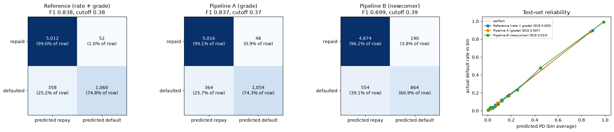
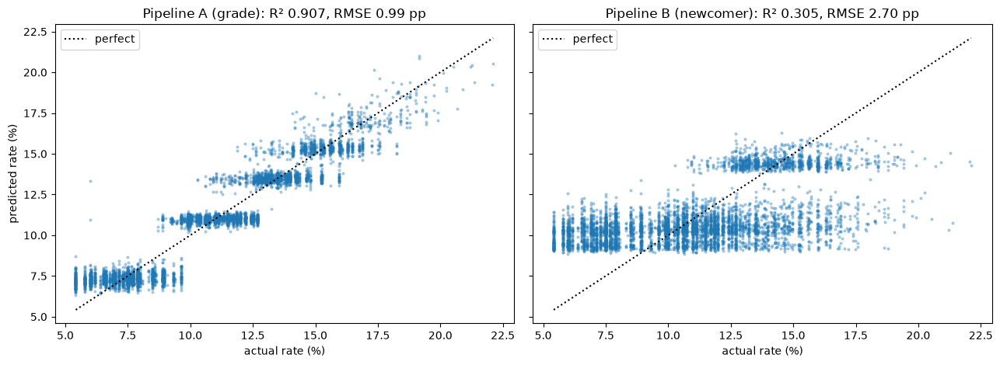
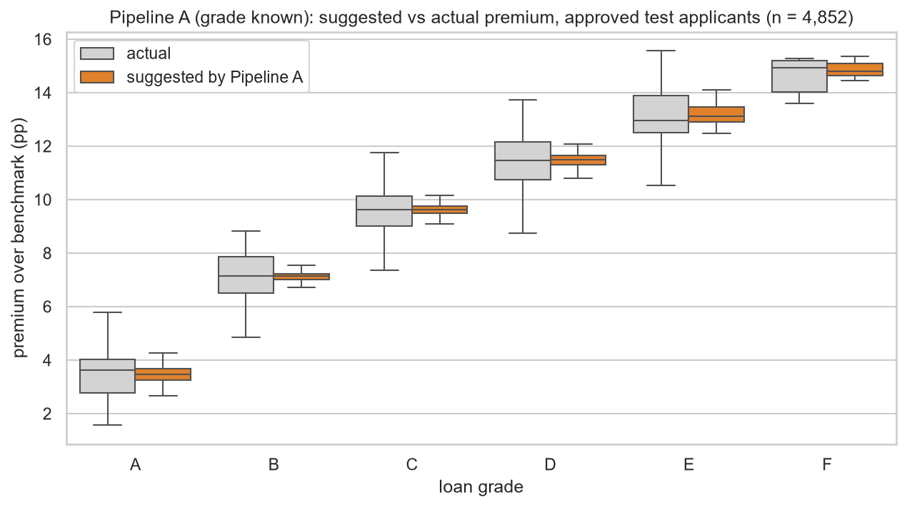
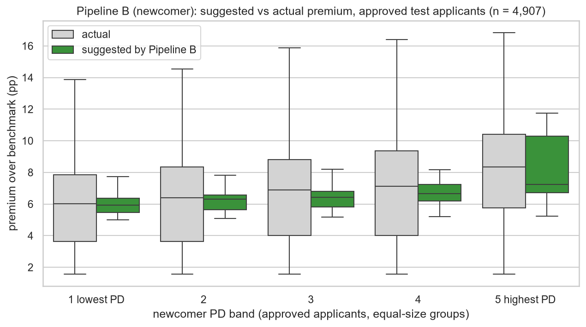

Results
The chosen model in every setting is a Random Forest, for default and for the interest rate. Test results match validation, so the models were not tuned to the validation folds.
Reference a loan that is already priced: the applicant's grade and the interest rate are both known.
Pipeline A a graded applicant: the applicant has a grade (A–G, a credit-history rating like a credit score), the interest rate is not set yet.
Pipeline B a newcomer: no grade and no rate, only what the applicant tells us.
Why we compare all three →
Final test set (6,482 applicants, used once)
| Reference rate + grade | Pipeline A grade | Pipeline B newcomer | |
|---|---|---|---|
| PD model (chosen on validation) | Random Forest, isotonic | Random Forest, isotonic | Random Forest, Platt |
| PD cutoff (frozen) | 0.378 | 0.367 | 0.388 |
| F1 test (95% interval) | 0.838 (0.823–0.853) | 0.837 (0.821–0.852) | 0.699 (0.677–0.719) |
| F1 validation | 0.829 | 0.827 | 0.691 |
| Precision / recall | 0.953 / 0.748 | 0.956 / 0.743 | 0.820 / 0.609 |
| ROC-AUC | 0.942 | 0.939 | 0.892 |
| Brier test (validation) | 0.052 (0.056) | 0.053 (0.056) | 0.086 (0.088) |
| ECE (calibration error) | 0.005 | 0.007 | 0.013 |
| Applicants approved | 82.8% | 83.0% | 83.7% |
| Rate model | - | RF regressor on grade + details | RF regressor on PD + details |
| Rate R² test (validation) | - | 0.907 (0.905) | 0.305 (0.305) |
| Rate error (RMSE) | - | ±0.99 pp | ±2.70 pp |
Baselines: what if we used no model?
A score only means something next to the simplest possible answer:
| Baseline | Result | Why | Our models |
|---|---|---|---|
| Say "everyone repays" | accuracy 0.781, F1 0 | 78.1% of test applicants repaid, so this is "right" 78% of the time, but it catches no defaulter. This is why we use F1, not accuracy. | F1 0.70–0.84 |
| Give everyone PD 0.219 (the average default rate) | Brier 0.171 | Every repayer is off by 0.219, every defaulter by 0.781: 0.219 × 0.781 = 0.171. | Brier 0.052–0.086 |
| Give everyone the average rate | RMSE 3.24 pp, R² 0 | This is just the natural spread of rates. | ±0.99 pp (A), ±2.70 pp (B) |
95% intervals: is the gap between A and B real?
The test set is one sample of 6,482 applicants; another sample would give slightly different scores. To measure this we used a bootstrap: draw 6,482 applicants from the test set with replacement (some appear twice, some not at all), recompute F1, and repeat 1,000 times. The middle 95% of those values is the interval. Pipeline A's lowest plausible F1 (0.821) is well above Pipeline B's highest (0.719), so the intervals do not overlap and the gap is real, not luck: the grade really helps. Reference (0.823–0.853) and A overlap almost completely, so knowing the rate on top of the grade adds nothing measurable.
Confusion matrices and reliability diagram

How to read a confusion matrix. Rows are what actually happened, columns are the model's decision at its frozen cutoff; "% of row" is the share of that actual group.
| predicted repay (approve) | predicted default (decline) | |
|---|---|---|
| repaid | correct: good customer approved | error: good customer wrongly declined (lost business) |
| defaulted | error: defaulter approved (lost money) | correct: defaulter declined |
| Test set (1,418 defaulters, 5,064 repaid) | Reference | Pipeline A | Pipeline B |
|---|---|---|---|
| Defaulters caught (recall) | 1,060 / 1,418 = 74.8% | 1,054 / 1,418 = 74.3% | 864 / 1,418 = 60.9% |
| Declined who really defaulted (precision) | 1,060 / 1,112 = 95.3% | 1,054 / 1,102 = 95.6% | 864 / 1,054 = 82.0% |
| Good customers wrongly declined | 52 (1.0%) | 48 (0.9%) | 190 (3.8%) |
| Defaulters approved | 358 | 364 | 554 |
| Default rate among approved (21.9% with no model) | 358 / 5,370 = 6.7% | 364 / 5,380 = 6.8% | 554 / 5,428 = 10.2% |
- All three decline a similar number (about 17%), so about 83% are approved.
- With the grade, 96% of declines are real defaulters, and the default rate among approved applicants falls from 21.9% to 6.8%.
- Without the grade (Pipeline B), the model wrongly declines four times as many good customers (190 vs 48) and approves about 190 more defaulters, because without the credit history it cannot tell them apart as well.
- The missed defaulters are mostly applicants who look safe (homeowners, small loans, high income): see Result analysis, finding 5.
How to read the reliability diagram. The test applicants are sorted by predicted PD and split into 10 equal groups (about 650 each). Each dot is one group: x = its average predicted PD, y = the share who actually defaulted. On the dotted diagonal, predicted = actual. All three pipelines lie on it; the ECE (average distance from the diagonal, weighted by group size) is only 0.005 / 0.007 / 0.013, so a PD can be read as a real probability. Most dots sit below 0.25 or near 0.9: the forests are confident about most applicants. Pipeline B has a dot at 0.45, a group it is unsure about (and indeed 47% of them defaulted).
Every model compared (validation, interactive)
Pick a task and a metric. These are 5-fold cross-validation scores on the training set (the test set was not used to choose).
Interest rates on the test set

Do the rates look real? (World Bank check)
Benchmark (the baseline rate). The interest rate that banks charge their safest customers at a given time; it moves with the economy (when the central bank raises rates, every loan gets more expensive). We use the US prime lending rate from the World Bank API. The data has no loan dates, so we use its average over the years that fit the data: 3.86%.
Premium. The extra a borrower pays on top of the benchmark for their own risk: premium = interest rate − benchmark. Example: a 7.3% loan when the benchmark is 3.86% has a premium of 7.3 − 3.86 ≈ 3.4 percentage points (pp).
"Above the benchmark" means the premium is positive: the borrower pays more than the safest customers. In real risk-based lending every borrower should be above the benchmark, and riskier borrowers further above it. Comparing premiums instead of raw rates removes the effect of the economy, so only the pricing of risk is left. Details in 12_macro_check.ipynb.


